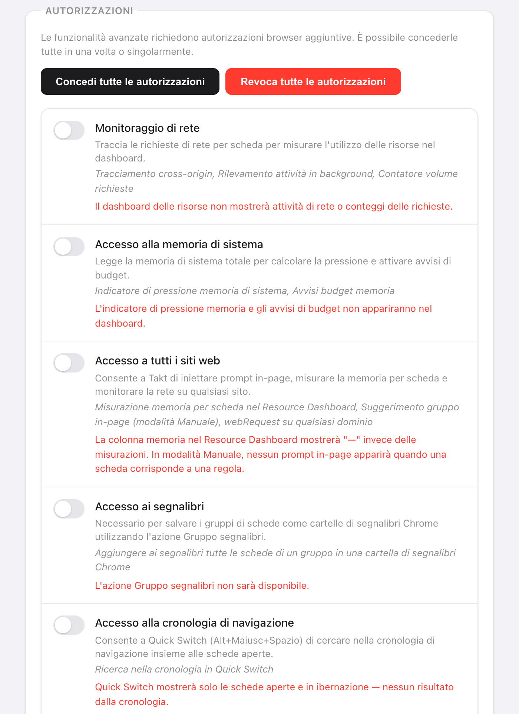

In breve: Takt non invia da nessuna parte dati di navigazione. Fa due tipi di richieste di rete, entrambe elencate qui sotto.
- Verifica della licenza verso ExtensionPay: all'avvio, ogni 15 minuti e quando apri il popup.
- Sincronizzazione con Google Drive: solo se la colleghi (Premium).
- Nessun account, nessuna analisi dei dati d'uso, nessuna telemetria. Il raggruppamento con IA usa il modello locale di Chrome.
Perché dovrei fidarmi di un'estensione per le schede?
Forse non dovresti, ed è ragionevole. Nel 2021 Google ha rimosso The Great Suspender, un'estensione che sospendeva le schede, dopo che era comparso codice malevolo in una versione pubblicata dopo la sua vendita. I suoi utenti avevano installato qualcosa di utile, e un aggiornamento l'aveva rivolto contro di loro.
Un gestore di schede deve leggere gli URL delle schede per funzionare. Quindi le domande utili sono: cosa ne fa, chi altro li riceve, e può cambiare senza che tu te ne accorga? Il resto di questa pagina risponde per Takt, con cose che puoi verificare da te.
Cosa resta sul mio computer?
Tutto ciò che Takt sa della tua navigazione vive nello spazio di archiviazione delle estensioni di Chrome:
- Regole, impostazioni e profili in
chrome.storage.sync. - Sessioni, schede ibernate, conteggi delle corrispondenze delle regole e la cronologia dei domini su cui si basano i suggerimenti di regole in
chrome.storage.local.
Una precisazione: se la sincronizzazione di Chrome è attiva, è Chrome stesso a copiare chrome.storage.sync tra i tuoi dispositivi tramite il tuo account Google. È una funzione di Chrome, non un server di Takt.
Quali server contatta Takt?
| Servizio | Quando | Cosa riceve |
|---|---|---|
| ExtensionPay (licenza) | All'avvio, ogni 15 minuti, quando apri il popup | Una chiave di licenza casuale. Nessun URL, nessun dato delle schede. |
| API di Google Drive | Solo dopo che hai collegato Drive. Ogni 15 minuti se la sincronizzazione automatica è attiva. | I file di sincronizzazione di Takt, nella cartella nascosta delle app di Drive |
| Accesso Google | Quando colleghi o scolleghi Drive | Al collegamento, una richiesta del tuo indirizzo email per mostrare quale account è collegato. Allo scollegamento, una richiesta di revoca del token di accesso di Takt. |
Un dettaglio da sapere: ExtensionPay crea quella chiave di licenza solo la prima volta che apri la pagina di upgrade o di accesso. Fino ad allora la verifica non trova nessuna chiave e finisce senza alcuna richiesta di rete.
La sincronizzazione con Drive usa l'ambito drive.appdata. Takt può leggere e scrivere i propri file in una cartella nascosta e non può vedere il resto del tuo Drive. La sincronizzazione su cartella, l'altra opzione di backup, scrive in una cartella che scegli tu; il caricamento, se c'è, lo fa il tuo client cloud.
Altre due cose aprono una pagina web, e nessuna delle due è una richiesta in background. Il link per lasciare una recensione apre il Chrome Web Store quando ci fai clic. E quando disinstalli, Chrome apre una pagina di feedback che riceve valori generici come versione, piano e una fascia del numero di regole. L'informativa sulla privacy elenca ogni valore.
Il raggruppamento con IA avviene sul dispositivo?
Sì. Il raggruppamento con IA usa il modello linguistico integrato in Chrome, che gira sul tuo computer. Chrome scarica il modello al primo utilizzo e Takt ne mostra l'avanzamento. Se il modello non è disponibile, Takt raggruppa invece per somiglianza, sempre in locale.
Per essere precisi su cosa vede il modello: il titolo di ogni scheda e, per le pagine che Chrome permette a Takt di leggere (lo consente l'accesso a tutti i siti), i primi 500 caratteri del testo visibile. Quel testo va al modello sul tuo computer e da nessun'altra parte. Non esiste un server di Takt a cui inviarlo.
La funzione IA di Chrome "Organizza schede simili", che alcune guide citano ancora, funzionava nel cloud, non sul tuo dispositivo, e Google l'ha ritirata nel 2025. Se vuoi solo fare ordine ogni tanto, i gruppi di schede e Risparmio memoria di Chrome possono bastarti, senza estensioni. Takt serve per regole che restano, blocco dei duplicati, ibernazione e sessioni in più.
Perché Takt chiede ogni autorizzazione?
Otto autorizzazioni vengono concesse all'installazione. Ognuna corrisponde a una funzione:
| Autorizzazione | Perché |
|---|---|
tabs | Leggere URL e titoli delle schede per confrontarli con le tue regole |
tabGroups | Creare, nominare, colorare e comprimere i gruppi |
activeTab | Agire sulla scheda corrente quando fai clic nel popup |
storage | Salvare regole, impostazioni, sessioni |
scripting | Mostrare l'avviso dei duplicati e la finestra del Cambio rapido; leggere il testo delle pagine per il raggruppamento con IA |
contextMenus | Voci del clic destro come Sospendi questa scheda |
notifications | Avvisi come quelli sul budget di memoria |
alarms | Attività programmate: ibernazione automatica, programmazioni dei profili, verifica della licenza |
Tutto il resto è facoltativo e disattivato finché una funzione non ne ha bisogno: webRequest, system.memory e l'accesso a tutti i siti per la Dashboard risorse (l'accesso a tutti i siti permette anche al raggruppamento con IA di leggere il testo delle pagine), bookmarks per Gruppo segnalibri, history per la ricerca del Cambio rapido e i suggerimenti di regole, downloads per la ricerca del Cambio rapido, identity per la sincronizzazione con Drive. Puoi revocarne qualsiasi in Settings, o impostare Takt perché non chieda mai.

Come posso verificarlo da solo?
- Apri
chrome://extensionse attiva la Modalità sviluppatore. - Nel riquadro di Takt, fai clic su service worker accanto a "Ispeziona visualizzazioni".
- Apri la scheda Rete e continua a navigare. Dovresti vedere solo le richieste della tabella qui sopra, più Takt che legge i propri file
chrome-extension://.
La content security policy di Takt è script-src 'self'. Può eseguire solo codice incluso nell'estensione, quindi non può scaricare nuovo codice da un server. Qualsiasi cambiamento di comportamento deve arrivare come nuova versione sul Chrome Web Store.
Da cosa questo non ti protegge
- Devi comunque fidarti degli aggiornamenti. Chrome installa le nuove versioni automaticamente. Nessuna policy può impedire a una versione futura di cambiare; la scheda Rete è il modo per accorgertene.
- ExtensionPay è una terza parte. Una volta che esiste una chiave di licenza, vede la chiave e, come qualsiasi server, il tuo indirizzo IP.
- L'autorizzazione
tabsè ampia. Takt può leggere URL e titolo di ogni scheda. È così che funzionano le regole. Quello che conta è che restino sul computer.
Un gestore di schede che non ha nessuno a cui telefonare.
Aggiungi Takt a Chrome, è gratisDomande frequenti
Takt invia da qualche parte la mia cronologia o gli URL delle schede?
No. Regole, confronti, sessioni, schede ibernate e suggerimenti restano nello spazio di archiviazione di Chrome sul tuo computer. Gli unici dati che escono sono la verifica della licenza e, se la colleghi, i file di sincronizzazione di Takt nel tuo Google Drive.
Takt richiede un account?
No. Non esiste un account Takt. Premium ($3/mese o $30/anno) si paga tramite ExtensionPay, che usa Stripe.
Il raggruppamento con IA di Takt avviene nel cloud?
No. Usa il modello locale integrato in Chrome. Senza il modello, Takt raggruppa per somiglianza, sempre in locale.
Perché Takt ha bisogno dell'autorizzazione tabs?
Per leggere URL e titolo di ogni scheda e confrontarli con le tue regole. Il confronto avviene nel browser; non viene trasmesso niente.
In cosa è diverso da The Great Suspender?
The Great Suspender è stato rimosso nel 2021 dopo che era comparso codice malevolo in una versione pubblicata dopo la sua vendita. La content security policy di Takt consente solo gli script inclusi nell'estensione, quindi ogni modifica deve arrivare come nuova versione sul Chrome Web Store, che puoi esaminare.